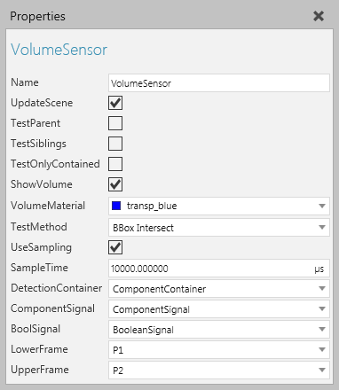

A Volume Sensor allows you to define a volume space for detecting any component in the 3D world.

| Name | Description |
| Name | Defines the name of the sensor. |
| UpdateScene | Defines if the simulation world (all components) is updated on each sample (SampleTime). A True value is needed when detecting moving components. And if True, for better performance, assign DetectionContainer to update only the components contained there, instead of the whole World. Otherwise, for performance, use a False value. |
| TestParent | Defines if the sensor detects geometry in the node it is attached to in the 3D world. Generally, a True value is used to detect self collisions, for examples doors in a machine colliding with one another. |
| TestSiblings | Defines if the sensor detects geometry in nodes that are at the same level as the sensor in a hierarchy. For example, components moving along a path are temporarily attached to the path's node during a simulation. Therefore, the sensor could be attached to the path's node and used to detect components moving along the path. In other cases, the sensor could be contained in a component's root node and used to detect other components attached to the 3D world (simulation root node). |
| TestOnlyContained | Defines if the sensor can only detect components which are stored in containers. Generally, a True value is used to detect components placed in machines and storage containers as well as components stacked on pallets. |
| ShowVolume | Defines if the volume space of the sensor is rendered in the 3D world. |
| VolumeMaterial | Defines the material of the sensor's volume space. Generally, a material with some transparency or Alpha channel is used in order to show the detection area and component that triggered the sensor. |
| TestMethod | Defines the mode of the sensor for detecting components.
Precise Test is triggered by the geometry of a component, for example edges and faces. BBox Intersect is triggered by the bounding boxes of geometry sets in a component. BBox Center Inside is triggered if the center of a colliding bounding box is inside the sensor's volume space. BBox Fully Inside is triggered if a colliding bounding box is completely inside the sensor's volume space. |
| UseSampling | Defines if the sensor operates using a sampling interval or pulse driven by a received signal. A True value uses sampling mode and is further defined using SampleTime. A False value uses pulse mode in which a signal acts as a trigger for detecting components. In pulse mode, the Connections property of a signal type behavior has the sensor listed as a connection and some kind of iteration is used to operate the sensor, for example a loop written in a Python Script or some logic defining the signal's frequency. |
| SampleTime | Defines the time interval between each sample if UseSampling is enabled. |
| DetectionContainer | Defines if the sensor only detects components in a specified container, for example a path in the sensor's component. |
| ComponentSignal | Defines the Component Signal used to signal what component was detected by the sensor. |
| BoolSignal | Defines the Boolean Signal used to signal when a component triggers the sensor. |
| LowerFrame | Defines the Frame feature referenced as the lower left corner of the sensor's volume space. |
| UpperFrame | Defines the Frame feature referenced as the upper right corner of the sensor's volume space. |